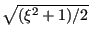
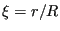
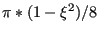

Next: Box Up: Beam Section Types Previous: Beam Section Types Contents
The pipe section is circular and is characterized by its outer radius and its
thickness (in that order). There are 8 integration points equally distributed
along the circumference. In local coordinates, the radius at which the
integration points are located is
   being the inner radius and
being the inner radius and  the outer radius. The weight for each
integration point is given by
the outer radius. The weight for each
integration point is given by